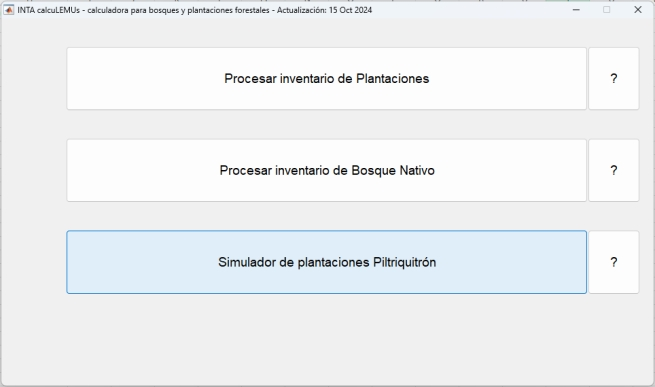

El simulador
Piltriquitrón es un conjunto de funciones matemáticas y
algoritmos que permiten estimar el crecimiento de plantaciones de
pino. La metodología original fue desarrollada por el Ing.
Ernesto Andenmatten, para pino oregón, y luego se lo
extendió para pino ponderosa y pino murrayana en el noroeste
de la Patagonia, y para Pino ellioti y Pino taeda en la
provincia de Córdoba.
Para una mejor
comprensión de los principios empleados para la
simulación se puede consultar "
Modelización del crecimiento y
la producción de los rodales a través de Índices de
Densidad".
También se
puede ver un
video en formato de storytelling del software Stella,
donde se detallan los componentes del simulador
Piltriquitrón.
Aquí se
presenta una versión del simulador que contiene las mismas
funciones y algoritmos, con una interfaz sencilla para mejorar la
experiencia del usuario, y simplifica el manejo de grandes
volúmenes de datos e información.
Se puede operar
tanto la simulación de tablas de producción como de
inventarios forestales con listas de diámetros.
Para acceder al
simulador seleccionar la siguiente opción desde la
consola:

Allí se
obtendrá acceso a:
|
||||